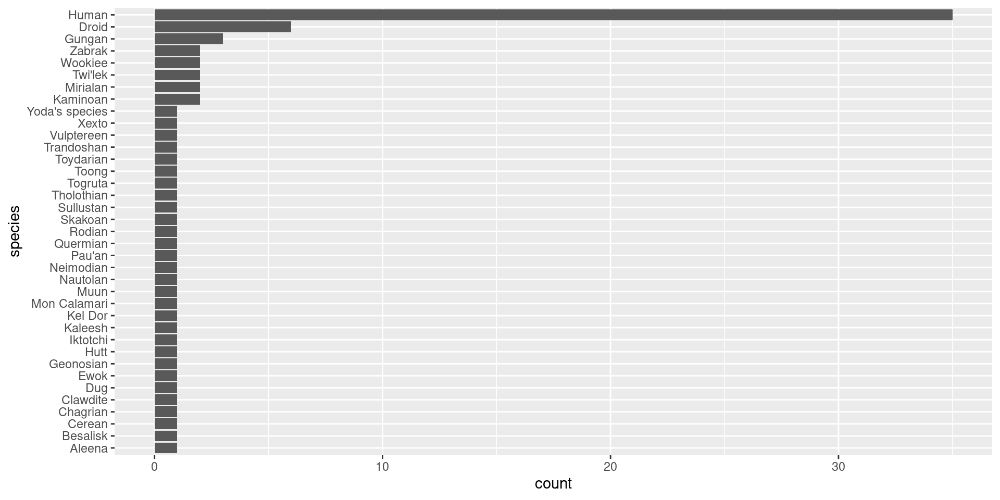

UQ R User Group - Data to Viz presentation for May meetup
Author
Luke Gaiter
Published
May 29, 2024
Introducing Data to Viz
I’m excited to introduce you to an incredibly valuable resource for anyone working with data visualisation in R: the Data to Viz website.
Data to Viz is a comprehensive guide designed to help users make informed decisions about which type of visualisation best suits their data. The website offers a structured and intuitive approach to choosing the most effective chart for your data story.
It has a user-friendly navigation, that aims to guide you through a decision tree to simplify the selection process based on the nature of your data and the story you wish to tell.
Includes support for popular programming environments such as R, Python and JavaScript.
It offers best practices for data visualisation, highlights common pitfalls, and provides aesthetic tips to enhance the readability and attractiveness of your charts. This makes it an excellent educational resource for both beginners and seasoned professionals aiming to improve their data storytelling skills.
Data going to be using is the Starwars dataset available through dplyr and originally from the Star Wars API (https://swapi.py4e.com/).
# set up custom df to make this easierswcount = starwars %>%count(species) swcount %>%# filter out any NAs to be safefilter(!is.na(species)) %>%# use forcats to reordermutate(species =fct_reorder(species, n)) %>%ggplot( aes(x=n, y=species)) +geom_bar(stat="identity") +xlab("count")

Talking Points:
Categorical Data Visualisation: Bar charts are excellent for visualising categorical data. They provide a clear and straightforward way to compare different categories.
Ease of Comparison: By using a bar chart, especially a horizontal one (achieved with coord_flip()), we make it easy to compare the counts of different species. This orientation is particularly useful when dealing with long category names.
Data to Viz Recommendation: According to the Data to Viz website, bar charts are ideal when you need to compare a single categorical variable across different groups.
Clarity and Simplicity: Bar charts are one of the simplest forms of data visualisation. They are easy to understand for audiences without a deep statistical background, making them suitable for a wide range of viewers.
Highlighting Frequencies: The height (or length) of the bars makes it easy to see the frequency of each category at a glance. This helps in quickly identifying which species are most and least common in the dataset.
Visualising Distributions: Box plots are particularly effective for visualising the distribution of a continuous variable and comparing it across several categories.
Five-Number Summary: They provide a summary of the data distribution using five key numbers: minimum, first quartile (Q1), median, third quartile (Q3), and maximum. This gives a clear picture of the data’s central tendency and variability.
Identifying Outliers: Box plots also highlight outliers in the data, which can be important for understanding the spread and anomalies within each species’ height data.
Comparative Analysis: By placing box plots side-by-side for different species, we can easily compare the height distributions across these groups. This helps identify species with similar or distinct height ranges.
Data to Viz Recommendation: The Data to Viz website suggests using box plots for comparing the distribution of a numerical variable across different groups, making them a suitable choice for this scenario.
Efficiency: Box plots summarise a large amount of data in a compact form, making them efficient for conveying complex information.
Continuous Data Visualisation: Density plots are ideal for visualising the distribution of a continuous variable. They provide a smooth estimate of the variable’s distribution, making it easier to see patterns.
Understanding Distribution Shape: Density plots help in understanding the shape of the data distribution (e.g., whether it is unimodal, bimodal, etc.), which is crucial for identifying trends and patterns in birth years.
Comparison with Histograms: While histograms also show distribution, density plots are often preferred because they provide a smoother, continuous curve that can be easier to interpret.
Data to Viz Recommendation: The Data to Viz website recommends using density plots for showing the distribution of a numerical variable, especially when you want a smooth estimate of the distribution.
Visual Appeal: Density plots are visually appealing and can handle overplotting better than histograms, particularly with large datasets.
Highlighting Density Peaks: The peaks in the density plot indicate where the concentration of data points is highest, allowing us to identify the most common birth years easily.